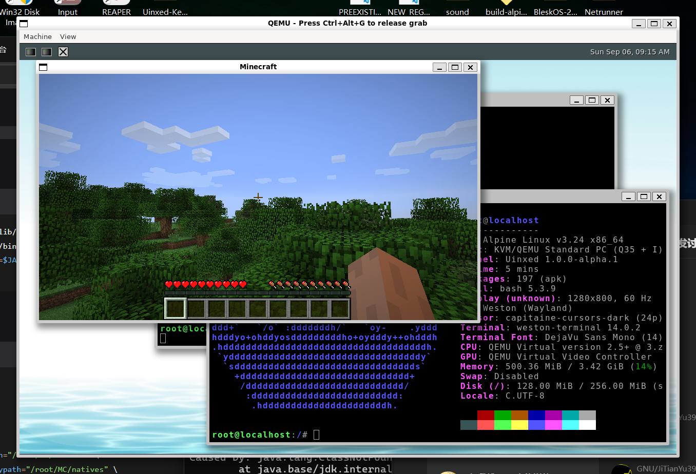

独立学生技术工作室 · 始于 2022
从第一行代码，
从第一行代码，
到一个操作系统。
从 Python 中的进程调度，到 UEFI 上的自研内核。我们是一群学生，把对操作系统的好奇，写成能运行、能阅读、能继续探索的开源项目。
02 个活跃项目
100% 开放源码
Python / C 从模拟到内核
03
你的第一条命令Shell · 应用程序 · ELF
$ open hello02
系统如何作出决定EEVDF 调度 · 进程 · 权限
kernel.py01
Python，真实的执行子进程 · 文件系统 · 宿主平台
Python 3.10+每一层都能打开源码，看到它如何工作。
PySpOS.
让系统原理，
成为可执行的代码。
维护中 v3.2.0 RC1 · MIT
一个可以运行，也可以逐行理解的模拟操作系统。
在 Python 中实现进程调度、内存映射、文件系统和引导流程。应用运行在真实子进程中，ELF 由 Unicorn 执行 x86 指令；改动源码后，你可以直接观察系统行为的变化。
- 调度
- EEVDF 虚拟截止期与 nice 权重
- 进程
- 真实 fork / exec、作业控制与信号
- 引导
- OOBE、A/B 槽位与签名验证
从这里开始 / Python 3.10+
$ git clone https://github.com/ViudiraTech/PySpOS.git
$ cd PySpOS
$ pip install -r requirements.txt
$ python launcher.py
SpaceOS 8.
从 UEFI 启动，
一直写到桌面。
抢先体验 x86_64 · Apache-2.0
在真实硬件上，让自己写的内核接管系统。
基于 Uinxed 自研 UNIX-like 内核，配一整套自研用户态。从窗口合成器到浏览器，一层一层实现。内核已在实体服务器上跑通，OpenJDK 与 DOOM 已能运行，图形与部分 ABI 仍在补齐。
- 内核
- Uinxed 1.0.0-alpha.1 · 约 18.1 万行
- 用户态
- SPUI 桌面、系统程序 · 约 29.2 万行
- 兼容
- Linux 系统调用与 X11 兼容层

发展历程
从 MP4 方案到自研内核
-
2022
狗头 OS
工作室创立，从网上狗头 OS 项目起步的“MP4 架构”折腾，攒下第一批关注者。
-
2023
互相学习
开始读别人的代码，过程中和原作者认识，互相学习。
-
2024
VimdropOS 与第一版 SpaceOS
基于 ViudiraTech 的 VimdropOS 做出第一版 SpaceOS，开启新篇章。
-
2025
UEFI 与 SpaceOS 6
深入研究 UEFI，基于 Uinxed-Kernel 研发正式的 SpaceOS。
-
2026
SpaceOS 7 自研与 SpaceOS 8
UEFI 完全搞懂之后走全栈自研；随后把方向收回内核与桌面可用的 SpaceOS 8。